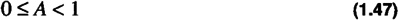
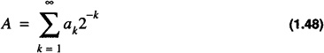
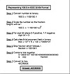
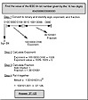
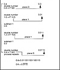

by Alan Parker
CRC Press, CRC Press LLC
ISBN: 0849371716 Pub Date: 08/01/93
|
|
Algorithms and Data Structures in C++
by Alan Parker CRC Press, CRC Press LLC ISBN: 0849371716 Pub Date: 08/01/93 |
| Previous | Table of Contents | Next |
This section presents examples of IEEE 32-bit and 64-bit floating point representations. Converting 100.5 to IEEE 32-bit notation is demonstrated in Example 1.1.
Determining the value of an IEEE 64-bit number is shown in Example 1.2. In many cases for problems as in Example 1.1 the difficulty lies in the actual conversion from decimal to binary. The next section presents a simple methodology for such a conversion.
This section presents a simple methodology to convert a decimal number, A, to its corresponding binary representation. For the sake of simplicity, it is assumed the number satisfies

in which case we are seeking the ak such that


Example 1.1 IEEE 32-Bit Format
The simple procedure is illustrated in Code List 1.12. The C Code performing the decimal to binary conversion is shown in Code List 1.13. The output of the program is shown in Code List 1.14. This program illustrates the use of the default value. When a variable is declared as z is by data z, z is assigned 0.0 and precision is assigned 32. This can be seen as in the program z.prec() is never called and the output results in 32 bits of precision. The paper conversion for 0.4 is illustrated in Example 1.3.
To represent keyboard characters, a standard has been adopted to ensure compatibility across many different machines. The most widely used standard is the ASCII (American Standard Code for Information Interchange) character set. This set has a one byte format and is shown in Table 1.8. It allows for 256 distinct characters and specifies the first 128. The lower ASCII characters are control characters which were derived from their common use in earlier machines.Although the ASCII standard is widely used, different operating systems use different file formats to represent data, even when the data files contain only characters. Two of the most popular systems, DOS and Unix differ in their file format. For example, the text file shown in Table 1.9 has a DOS format shown in Table 1.10 and a Unix format shown in Table 1.11. Notice that the DOS file use a carriage return, cr, followed by a new line, nl, while the Unix file uses only a new line. As a result Unix text files will be smaller than DOS text files. In the DOS and Unix tables, underneath each character is its ASCII representation in hex. The numbering on the left of each table is the offset in octal of the line in the file.

Example 1.2 Calculating the Value of an IEEE 64-Bit Number

Example 1.3 Converting 0.4 from Decimal to Binary
Code List 1.12 Decimal to Binary Conversion
Code List 1.13 Decimal to Conversion C++ Program
Code List 1.14 Output of Program in Code List 1.13
| ASCII Listing | |||||||
|---|---|---|---|---|---|---|---|
| oo nul 08 bs 10 dle 18 can 20 sp 28 ( 30 0 38 8 40 @ 48 H 50 P 58 X 60 68 h 70 p 78 x | 01 soh 09 ht 11 dc1 19 em 21 ! 29 ) 31 1 39 9 41 A 49 I 51 Q 59 Y 61 a 69 i 71 q 79 y | 02 stx 0a nl 12 dc2 1a sub 22 “ 2a * 32 2 3a : 42 B 4a J 52 R 5a Z 62 b 6a j 72 r 7a z | 03 etx 0b vt 13 dc3 1b esc 23 # 2b + 33 3 3b ; 43 C 4b K 53 S 5b [ 63 c 6b k 73 s 7b { | 04 eot 0c np 14 dc4 1c fs 24 $ 2c , 34 4 3c < 44 D 4c L 54 T 5c \ 64 d 6c l 74 t 7c | | 05 enq 0d cr 15 nak 1d gs 25 % 2d - 35 5 3d = 45 E 4d M 55 U 5d ] 65 e 6d m 75 u 7d } | 06 ack 0e so 16 syn 1e rs 26 & 2e . 36 6 3e > 46 F 4e N 56 V 5e ^ 66 f 6e n 76 v 7e ~ | 07 bel 0f si 17 etb 1f us 27 ‘ 2f / 37 7 3f ? 47 G 4f O 57 W 5f _ 67 g 6f o 77 w 7f del |
| Test File |
|---|
| This is a test file We will look at this file under Unix and DOS |
| Previous | Table of Contents | Next |
){kind=link}
){kind=link}
){kind=link}
){kind=link}
){kind=link}
){kind=link}
){kind=link}